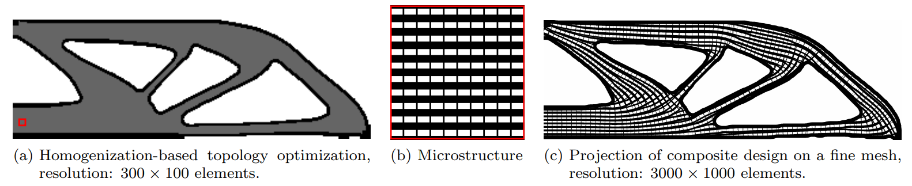

Homogenization-based Stiffness Optimization and Projection of 2D Coated Structures with Orthotropic Infill
Computer Methods in Applied Mechanics and Engineering, 2019
| Jeroen Groen, Jun Wu, and Ole Sigmund |
| Department of Mechanical Engineering, DTU |
| Department of Design Engineering, TU Delft |

Overview of the proposed methodology to obtain high-resolution coated designs, with composite orthotropic infill.
Abstract
This paper concerns compliance minimization and projection of coated structures with orthotropic infill material in 2D. The purpose of the work is two-fold. First, we introduce an efficient homogenization-based approach to perform topology optimization of coated structures with orthotropic infill material. The design space is relaxed to allow for a composite material description, which means that designs with complex microstructures can be obtained on relatively coarse meshes. Second, a method is presented to project the homogenization-based designs on a fine but realizable scale. A novel method to adaptively refine the lattice structure is presented to allow for a regular spacing of the infill. Numerical experiments show excellent behavior of the projected designs, with structural performance almost identical to the homogenization-based designs. Furthermore, a reduction in computational cost of at least an order of magnitude is achieved, compared to a related approach in which the infill is optimized using a density-based approach.Download
 |
Paper MB |
Related Projects
Minimum Compliance Topology Optimization of Shell-Infill Composites for Additive Manufacturing
Infill Optimization for Additive Manufacturing -- Approaching Bone-like Porous Structures
Bibtex
@article{Groen2019CMAME,
author={Groen, Jeroen and Wu, Jun and Sigmund, Ole},
title={Homogenization-based stiffness optimization and projection of 2D coated structures with orthotropic infill},
journal={Computer Methods in Applied Mechanics and Engineering},
volume={349},
pages={722-742},
year={2019},
doi={https://doi.org/10.1016/j.cma.2019.02.031},
issn = {0045-7825}
}